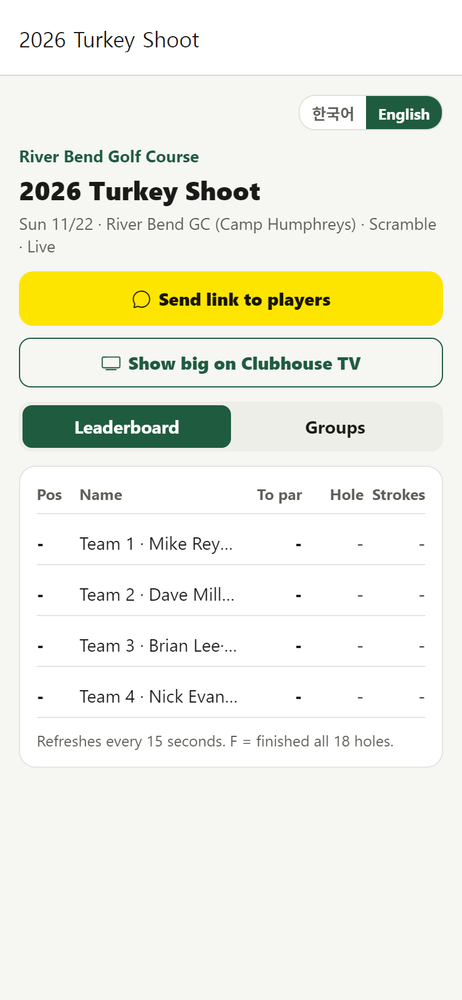
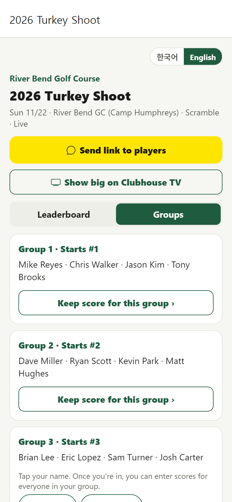
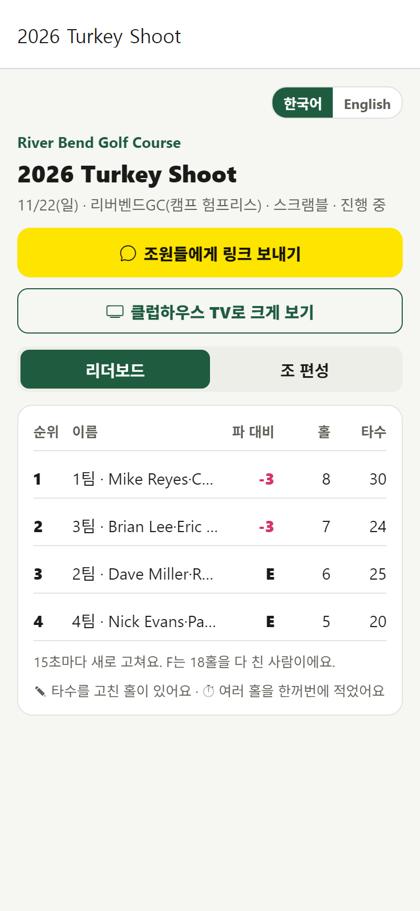
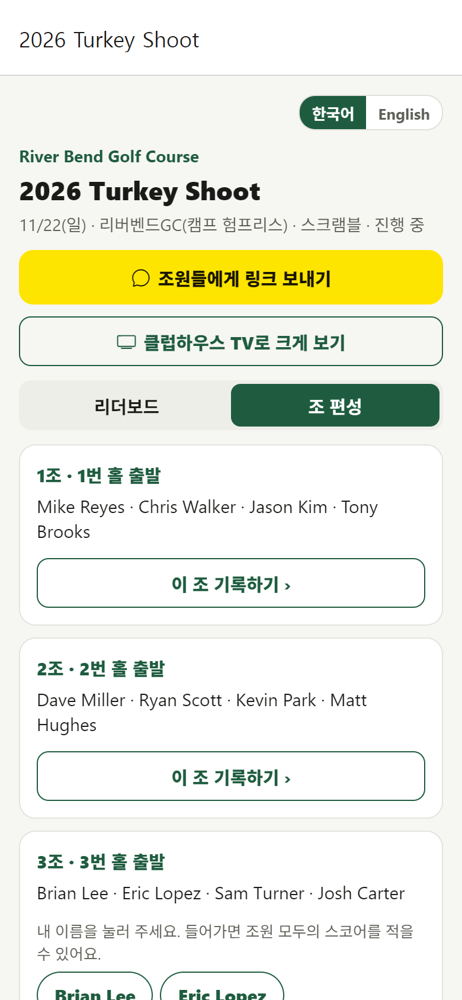
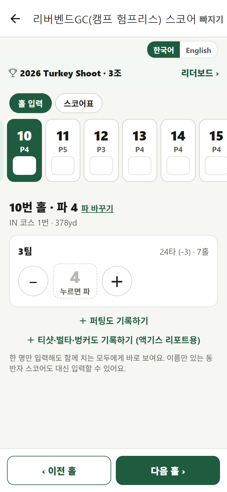

2026 Turkey Shoot · River Bend GC
Team scorekeeper: 4 steps
One person per team enters the team score after each hole. No app and no sign-up needed.
1Open the tournament link
Tap the link the organizer sent you. It opens in your phone's browser.

2Find your team
Tap Groups, then Keep score for this group › under your team.

3Tap your name
Your team's scorecard opens on your shotgun starting hole.

4Enter the team score after every hole
Tap the number to enter par, or use − / ＋. It moves to the next hole by itself. Tap Leaderboard › to see where you stand.

Good to know
- Enter each hole right after you finish it. Every score is visible to all teams live.
- Changed scores show ✎ and holes entered all at once show ⏱ on the leaderboard.
- Keep filling in the paper scorecard as usual; it's still the official card.
- No signal on a hole? You'll see a message if a score didn't save. Enter it again once you have signal.
Message to send (copy & paste)
⛳ 2026 Turkey Shoot: live scoring with BirdieMan
One person per team keeps score on their phone (no app, no sign-up):
1) Open this link: [TOURNAMENT LINK]
2) Tap Groups → “Keep score for this group” under your team
3) Tap your name
4) Enter your team score after every hole
Live leaderboard for everyone at the same link 👆
How-to with pictures: birdieman.co.kr/riverbend/players.html
2026 Turkey Shoot · 리버벤드GC
팀 기록 담당: 4단계
팀마다 한 명이 홀이 끝날 때마다 팀 점수를 넣어요. 앱 설치도 가입도 필요 없어요.
1대회 링크 열기
운영자가 보내 준 링크를 누르면 폰 인터넷 창에서 바로 열려요.

2우리 팀 찾기
조 편성을 누르고, 우리 팀 아래 이 조 기록하기 ›를 눌러요.

3내 이름 누르기
우리 팀 스코어카드가 샷건 출발 홀부터 열려요.

4홀이 끝날 때마다 팀 점수 넣기
숫자를 누르면 파, − / ＋로 조정해요. 다음 홀로 자동으로 넘어가요. 리더보드 ›에서 우리 순위를 볼 수 있어요.

알아 두세요
- 홀을 마치면 바로 넣어 주세요. 모든 점수는 모든 팀에게 실시간으로 공개돼요.
- 점수를 고치면 ✎, 여러 홀을 한꺼번에 넣으면 ⏱가 리더보드에 표시돼요.
- 종이 스코어카드도 평소처럼 적어 주세요. 공식 기록은 종이 카드예요.
- 전파가 약해 저장이 안 되면 알림이 떠요. 신호가 잡히면 그 홀을 다시 넣어 주세요.
보낼 메시지 (복사해서 붙여넣기)
⛳ 2026 Turkey Shoot: 버디맨 실시간 스코어
팀마다 한 명이 폰으로 기록해요 (앱 설치·가입 없음):
1) 링크 열기: [대회 링크]
2) 조 편성 → 우리 팀 '이 조 기록하기'
3) 내 이름 누르기
4) 홀마다 팀 점수 넣기
같은 링크에서 실시간 순위를 모두 볼 수 있어요 👆
그림 안내: birdieman.co.kr/riverbend/players.html#ko